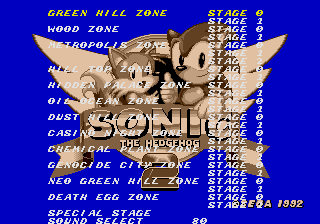

You are listening to: Hidden Palace Zone - Koryan
*Mega Drive*Sonic the Hedgehog 2 BETA Cheats and Tips

Release Game Info |
Tips & Cheats | Cheat Codes | Music | Boxes
BETA Game Info
Contents
*Level Select*
*Debug Mode*
*2 Player (Splitscreen)*
*Play at Night*
*Level Select*
Not too difficult this one. Just wait for the title screen, hold A and press START.
*Debug Mode*
Well, there's no direct way of getting the Debug mode in Sonic 2 BETA. But, it is possible. Download this savestate, put it in the same directory as Genecyst, make sure its filename reads 's2b.gs0' and load up Sonic 2 BETA. Then Click on 'Restore savestate' from the menu and select your level. When you appear you can change into objects using B, scroll through objects using A, place them using C, and return as Sonic by pressing B again.
*2 Player (Splitscreen)*
Activate the Level Select first of all. Highlight the level you want, hold B and press START. You may want a different emulator though if you downloaded Genecyst, as the 2 Player will not work on this emulator or KGen either. It only works in a few levels aswell.
*Play at Night*
Once the level select is up highlight your desired level, hold C and press STARt. This only works on a few zones.*Send in your cheats, codes and walkthroughs to Dreadknux!*
dreadknux@knuckles.co.uk
Fill in the form!